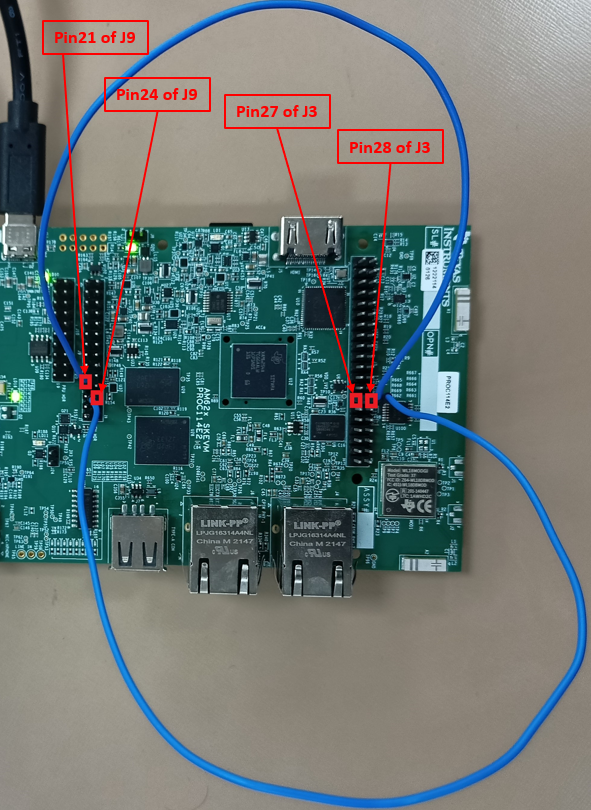

|
AM62Ax MCU+ SDK
11.01.00
|
|
|
AM62Ax MCU+ SDK
11.01.00
|
|
This example demonstrates reading data from I2C based EEPROM devices present in the board. Application reads 20 samples from the EEPROM and exits.
SCL and SDA pins of MCU_I2C0 are available at the MCU_HEADER in the board. MCU_I2C0 can be connected to Board ID EEPROM through making the following jumper connections as shown in the image.

To modify the example to use main/wakeup domain I2C, refer Accessing main and wakeup domain peripherals from MCU domain
| Parameter | Value |
|---|---|
| CPU + OS | mcu-r5fss0-0 nortos |
| Toolchain | ti-arm-clang |
| Board | am62ax-sk |
| Example folder | examples/drivers/i2c/i2c_read |
Shown below is a sample output when the application is run,
 1.8.20
1.8.20